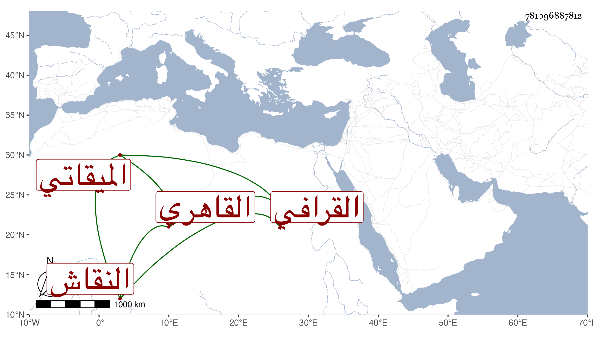

0902Sakhawi.DawLamic.ITO20230111-ara1.EIS1600.781096887812
Biography ID: 781096887812
828
علي بن عبد القادر بن محمد نور الدين القرافي القاهري النقاش الميقاتي . حضر دروس الولي العراقي وأخذ الميقات والهندسة عن ابن المجدي والنقش عن زوج أمه وبرع في كل منهما وتكسب بالنقش في حانوت بالصاغة وباشر الرياسة بجامع المقسي وبالجمالية الصاحبية وغيرهما كالتربة الأشرفية أينال بل درس الفن ببعض الأماكن وعمل عمدة الحذاقي في العمل في سائر الآفاق اختصره من كتاب له مبسوط في ذلك مع غيرهما من التآليف والأوضاع وانتفع به جماعة وممن أخذ عنه ابنه وعبد العزيز الوفائي . مات وقد أسن في جمادى الثانية سنة ثمانين ودفن بتربة جوار تربة سعيد السعداء عفا الله عنه ورحمه .
